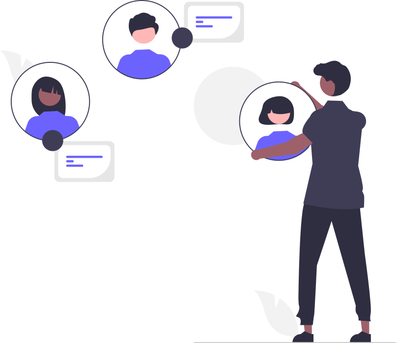

<div id="home-page-container">
  
  <div class="joyn-title-container">
    

    <div class="col">
      <h1 class="app-title">
        <span style="color: #5670a0; font-weight: 600">Joyn</span>Clientes
      </h1>
      <p class="app-desc">
        Projeto Frontend desenvolvido em Angular como Desafio Técnico para Joyn
      </p>
      <div class="home-btn-container">
        <button
          mat-raised-button
          color="accent"
          [routerLink]="['/client-list']"
        >
          Lista de Clientes
        </button>
        <button
          mat-raised-button
          color="primary"
          [routerLink]="['/new-client']"
        >
          Novo Cliente
        </button>
      </div>
    </div>
  </div>
</div>
